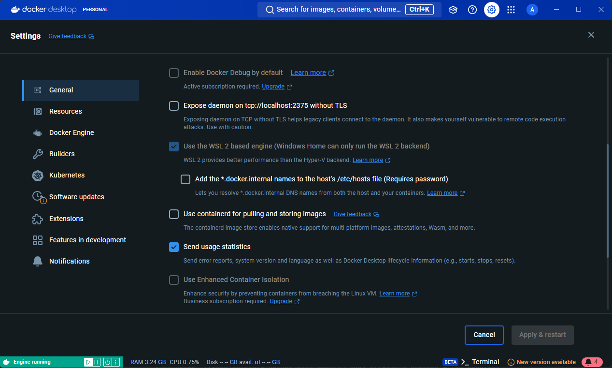
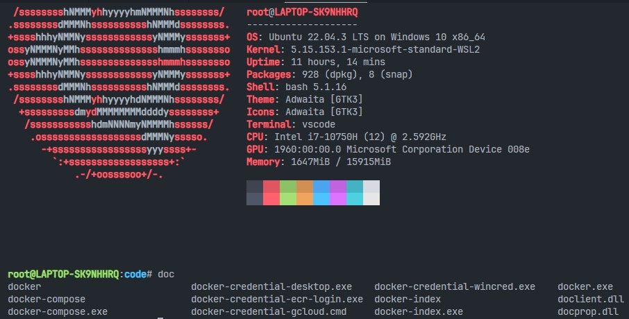

Docker及Container的使用
Date: 2024/07/03
Auth: Guanyan.Wang
Environment: Microsoft WSL2 - Ubuntu 22.04
0. 學到docker的契機
之所以會碰到docker這個東東，是因為一個隔壁team大佬分享的故事
之前他們在進行某個案子的時候，因為每個人在進行開發時使用的環境都不一樣
* A同事用 Windows 10
* B同事用 Linux
導致他們在進行整合時就需要解決一大堆相容性的問題，真的是一大堆，搞得大家都很不愉快
Debug到快發瘋，誰會爽呢(╯‵□′)╯︵┴─┴
因此才會去接觸到Docker這個東東，來統一所有人的環境，避免掉這些不必要的麻煩，
後來引進到部門內後，才讓我有這個契機去學習docker這個酷東西
另外docker也有相當多的應用！
例如：使用docker建立自己的gitlab server並結合各個自製的container架構出嚴謹的CI/CD環境。
1. 什麼是 Container
容器(Container)是一種虛擬化的技術，用來封裝應用程式及其dependencies，確保在不同的環境上都能夠正確的運行
容器與傳統的VM不同，它不需要整個作業系統，只需應用程式及其相關的library、設定檔和必要的執行環境。因此container非常的輕量，啟動速度非常快，資源開銷低。

container structure
2. Docker 的安裝
以在WSL2環境下運行，我們先安裝 Docker desktop
[點此前往安裝 Docker]安裝完成後先前往設定頁面將WSL2與Docker engine整合。
成功開啟後就可以到WSL2的環境底下使用Docker command囉
 Enable WSL2 Engine with docker
 Enable use docker command in WSL2 environment
3. 使用docker-compose建立container
Docker compose是docker中相當重要的command，docker會根據yml檔定義的內容建立container
Docker-compose.yml:
services: web: container_name: fastAPI build: context: . dockerfile: fastAPI_Dockerfile ports: - "8000:8000" volumes: - /code/fastAPI/:/app這個yaml檔定義了container的名字，對外對接的port number，建構image時所要用的檔案等訊息。
接著只要在這個docker-compose.yml的目錄下輸入command:
docker-compose up -d就會自動的創造image並製作一個符合docker-compose.yml定義的container